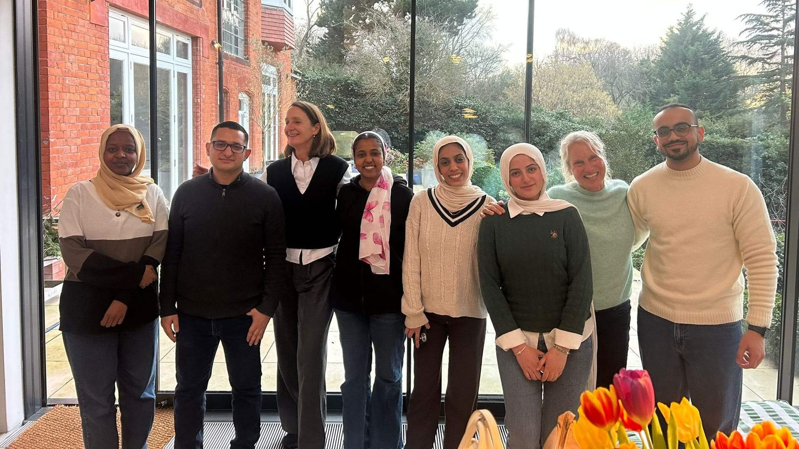
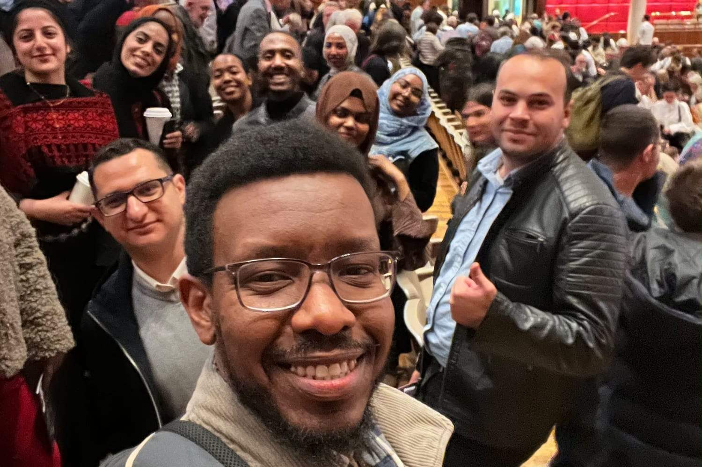
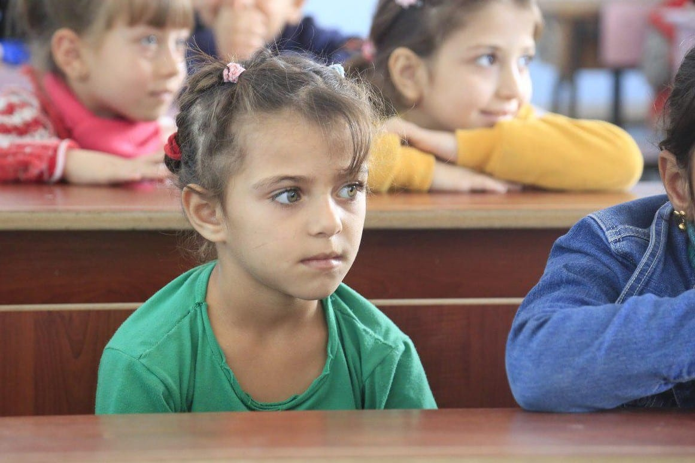
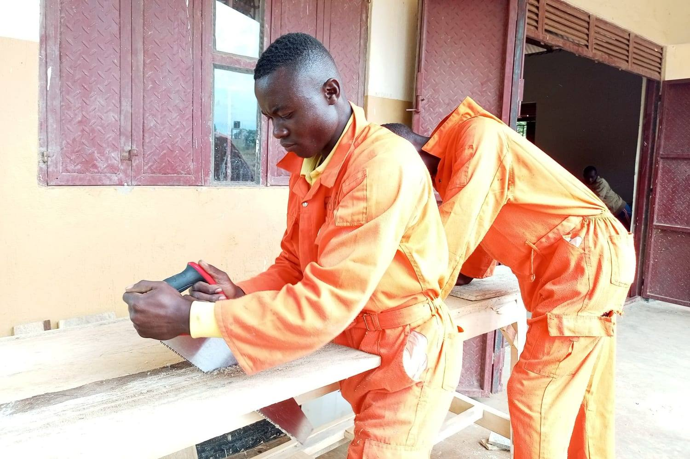
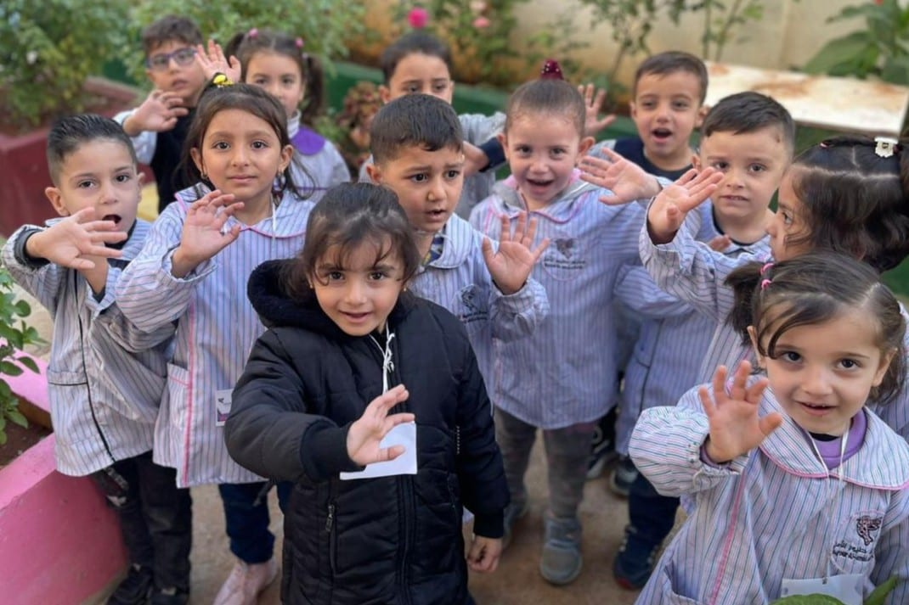
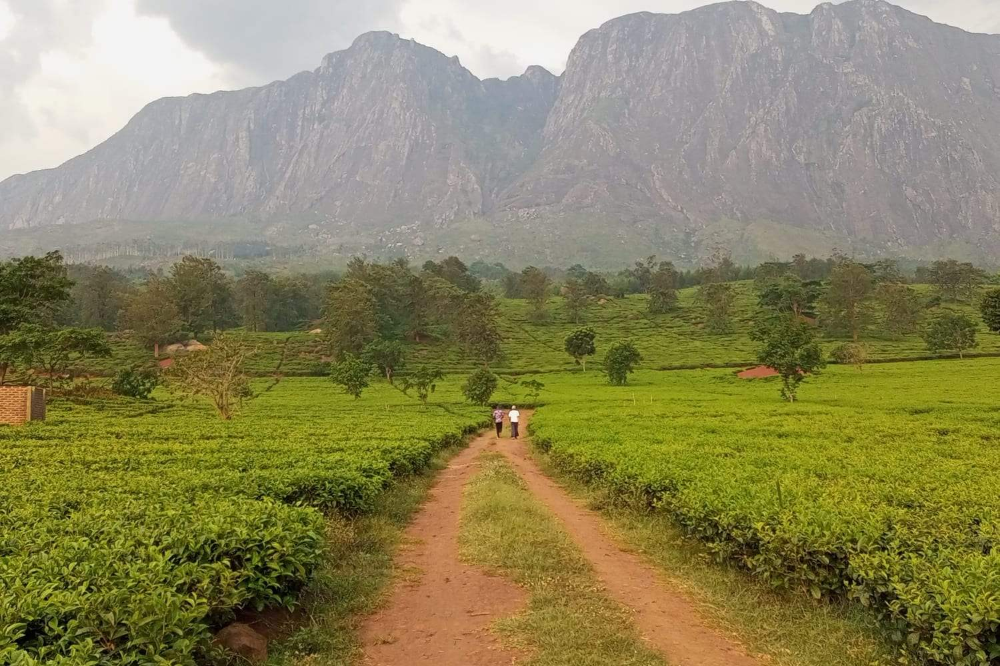
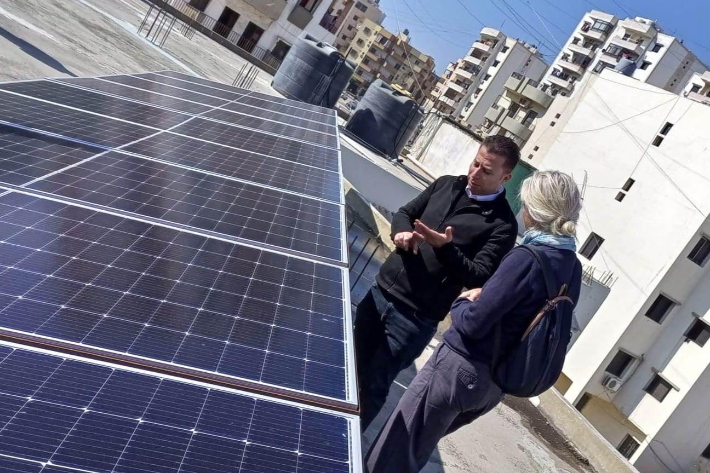

01
Investing in People
We believe in the potential of individuals and families, and work to expand opportunities for people in challenging circumstances.


Our mission
We work alongside individuals and communities to turn knowledge, ambition and local leadership into sustainable pathways forward.
Why we exist
The Altenburg Foundation supports refugees and at-risk professionals, as well as grassroots organisations, to advance integration and maximise community impact.
Founder story
We believe in the potential of individuals and families, and work to expand opportunities for people in challenging circumstances.
We collaborate with extraordinary organizations to address real needs and create meaningful, lasting impact in the communities we serve.
Our work spans education, livelihoods, health and human development — all rooted in the belief that when people thrive, communities thrive.
Where we work

UK – personal mentoring, personalised sponsorship and support of refugees seeking accreditation of professional expertise as well as personal mentoring and sponsorship of those from lower socio-economic and underrepresented backgrounds. We also support specialist foundations providing skills and training in leadership and belonging through sports.

Syria – we have funded the restoration, reopening and ongoing running of a school in rural Aleppo for five years as well as a programme of professional development for teachers working in schools reintegrating returning refugees.

Uganda – beginning in 2018, we have been supporting three primary schools and one secondary school run by refugees, for refugees in various ways including funding salaries, sponsorships, teacher training, feeding programmes, revenue generation projects and capital investment in infrastructure including classrooms and furnishings; we have also developed a collaborative partnership to provide quality vocational skills training and start-up kits to allow people to develop their own businesses.

Lebanon – we support the work of Tuyoor Al Amal schools in Tripoli; they serve the Syrian refugee community there in education from Kindergarten to high school Grade 12. We have funded their summer school programme over a number of years, and also funded the provision of solar panels and the development of a computer teaching room and library for the more than 2,500 children there. We also support the ongoing professional development of their staff.
Also in Lebanon we have funded for four years the professional development cohort at The Alsama Project in Shatila refugee camp, Beirut. This is an award-winning education programme which aims to take children with little or no education to high-school completion within six years. Alongside their academic studies, they follow courses in ‘soft’ professional skills for employment and personal development through engagement with the natural world, and in supporting their preparations for access to higher education.

Malawi – since 2024 we have provided funding support to a grassroots organisation offering entrepreneurship and skills training alongside individual loans for the establishment of small businesses.

Transnational – as part of our Fellowship Programme, the Fellows design and implement community development projects in their home countries. Additionally, we have provided and still do operational seed funding for an innovative non-governmental organisation based in Germany which works to supply transformative solar power to schools and hospitals in crisis-affected regions. Their work encompasses extensive programmes in Lebanon, Syria, Malawi, Uganda and Ethiopia.
Alongside this, all of our partners in all the country contexts in which we work benefit from extensive, in-person consultancy support we provide on an ongoing basis.
Foundation impact
Our education and community projects at a glance.
Mission & values
Compassion, care, challenge and love inform how the Foundation approaches every relationship and opportunity.
We want children, especially those with fewer opportunities, to have access to quality learning wherever possible
We support displaced people as they build lives of belonging, stability and new pathways
We believe in sport and personal development as routes to confidence, growth and self-determination

Get involved
Your support can take many forms, from giving and fundraising to mentoring, professional guidance and partnership.
Start a conversation